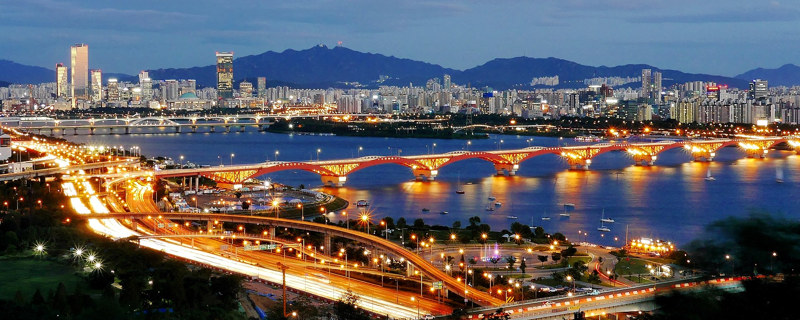

Seoul
From Wikipedia, the free encyclopedia - Last Updated: Oct 8, 2022 - Source of information
by travel oriented - Flickr, CC BY-SA 3.0, Link
Seoul, officially known as the Seoul Special City, is the capital and largest metropolis of South Korea. According to the 2020 census, Seoul has a population of 9.9 million people, and forms the heart of the Seoul Capital Area with the surrounding Incheon metropolis and Gyeonggi province. Considered to be a global city and rated as an Alpha - City by Globalization and World Cities Research Network (GaWC), Seoul was the world's 4th largest metropolitan economy in 2014 after Tokyo, New York City and Los Angeles.
Seoul was rated Asia's most livable city with the second highest quality of life globally by Arcadis in 2015, with a GDP per capita (PPP) of around $40,000. With major technology hubs centered in Gangnam and Digital Media City, the Seoul Capital Area is home to the headquarters of 15 Fortune Global 500 companies, including Samsung, LG, and Hyundai. Ranked seventh in the Global Power City Index and Global Financial Centres Index, the metropolis exerts a major influence in global affairs as one of the five leading hosts of global conferences. Seoul has hosted the 1986 Asian Games, 1988 Summer Olympics, and the 2010 G20 Seoul summit.
Seoul was the capital of various Korean states, including Baekje, Joseon, the Korean Empire, Goryeo (as a secondary capital), and presently South Korea. It is strategically located along the Han River. Seoul's history stretches back over two thousand years, when it was founded in 18 BC by the people of Baekje, one of the Three Kingdoms of Korea. The city was later designated the capital of Korea under the Joseon dynasty. Seoul is surrounded by a mountainous and hilly landscape, with Bukhan Mountain located on the northern edge of the city. The Seoul Capital Area contains five UNESCO World Heritage Sites Changdeok Palace, Hwaseong Fortress, Jongmyo Shrine, Namhansanseong and the Royal Tombs of the Joseon Dynasty. More recently, Seoul has been a major site of modern architectural construction – major modern landmarks include the N Seoul Tower, the 63 Building, the Lotte World Tower, the Dongdaemun Design Plaza, Lotte World, Trade Tower, COEX, and the IFC Seoul. Seoul was named the 2010 World Design Capital. It is the birthplace of K-pop and the Korean wave.
Back to top of page